Các địa điểm nổi tiếng ở Phú Quốc
- Phú Quốc còn có tên gọi khác là Đảo Ngọc hòn đảo lớn nhất nước ta thuộc Vịnh Thái Lan.
Hằng năm, nơi đây đón hàng triệu lượt khách du lịch trong và nước bởi vẻ đẹp hoang sơ,
quyến rũ.
- Sau đây là các địa điểm nếu được đến Phú Quốc bạn nên đi:
+ VinWonders và Vin Safari ( Thuộc Bắc Đảo Phú Quốc):
- Khỏi phải nói, đây là một địa điểm quá tuyệt vời dành cho mỗi du khách tới Phú Quốc,
bạn sẽ được thỏa thích vui chơi không giới hạn tất cả các trò chơi từ trong nhà tới ngoài trời, từ mạo hiểm tới nhẹ nhàng thư giãn,
vừa ăn uống vừa mua sắm.
- VinSafari là vườn thú mở đầu tiên và duy nhất tại Việt Nam được xây dựng theo mô hình Safari thế giới.
Quy tụ khoảng 3.000 cá thể, đại diện cho 150 loài động vật quý hiếm từ khắp nơi trên thế giới.
Đây chắc chắn sẽ là một trải nghiệm vô cùng thú vị dành cho bạn và gia đình.
.jpg)
+ Cáp treo Hòn Thơm ( Thuộc Nam Đảo Phú Quốc):
Là tuyến cáp treo 3 dây công nghệ Châu Âu với chiều dài tới 7.899,99m, dài nhất thế giới hiện nay.
Tập hợp một quần thể du lịch dịch vụ như Làng biển,
Làng ẩm thực, khu nghỉ dưỡng, kèm theo một tổ
hợp công viên giải trí biển đảo với các trò chơi mạo hiểm... sẽ tạo nên những nét mới đầy sức hút cho bất cứ ai đặt chân tới đảo ngọc Phú Quốc.
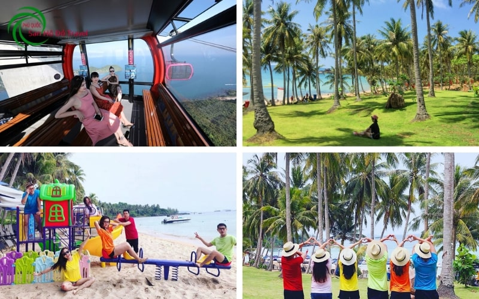
+ Grand World Phú Quốc:
Ra mắt vào năm 2021, Grand World Phú Quốc được đông đảo tín đồ xê dịch biết đến với mỹ danh “thành phố không ngủ” và là toạ độ check-in không thể bỏ lỡ khi đi du lịch Phú Quốc. Đến với Grand World Phú Quốc, bạn như vừa mở cánh cửa thần kỳ đến thế giới rực rỡ sắc màu của các hoạt động tham quan, vui chơi, giải trí, ăn uống, mua sắm...

+ Công viên san hô Namaste Phú Quốc
Lặn ngắm san hô? Thú vị đấy nhưng cũng thường thôi. Ở Công Viên San Hô Namaste Phú Quốc, bạn sẽ có trải nghiệm “đi bộ dưới đáy biển” cực xịn sò và zoom cận cảnh hệ sinh thái san hô phát triển bậc nhất đảo ngọc. Cụ tỉ là ở 4 hòn đảo nổi tiếng: Mây Rút Trong, Mây Rút Ngoài, Gầm Gì và Móng Tay.
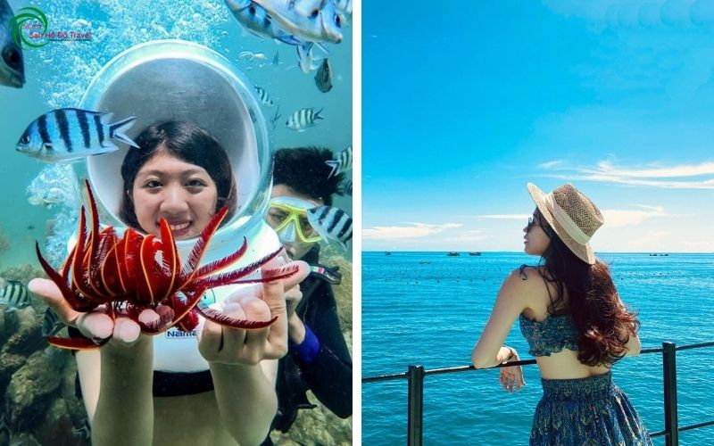
+ Sunset Sanato Phú Quốc
Là tổ hợp khu nghỉ dưỡng, nhà hàng, quán cafe và bar trên biển nổi tiếng tại đảo ngọc. Địa điểm này cũng được xem là một trong những nơi lý tưởng nhất để ngắm nhìn hoàng hôn ngũ sắc. Bên cạnh khung cảnh rực rỡ do mẹ thiên nhiên ban tặng, bãi biển ở Sunset Sanato Phú Quốc còn được điểm tô bởi những tác phẩm nghệ thuật đương đại đầy ngẫu hứng.
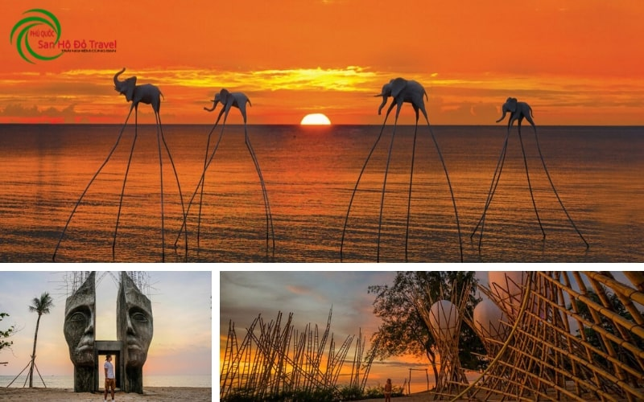
Để giúp bạn dễ hình dung và lên lịch trình di chuyển, mình chia Phú Quốc làm 5 khu vực:
- Khu trung tâm Thị Trấn Dương Đông
- Khu Bắc Đảo ( Gành Dầu )
- Khu Đông Đảo ( Hàm Ninh )
- Khu Nam Đảo ( An Thới )
- Khu Bãi Thơm.
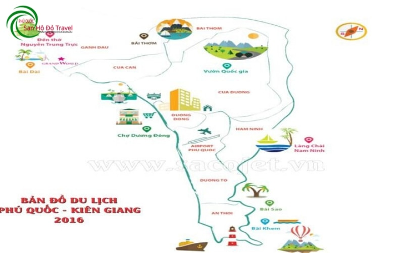
+ Khu thị trấn Dương Đông:
Dinh Cậu: Đây là một biểu tượng của Phú Quốc, bạn nhất định phải ghé qua. Đến đây, du khách sẽ được thưởng ngoạn cảnh hoàng hôn trên biển Tây, một bức tranh tuyệt đẹp!
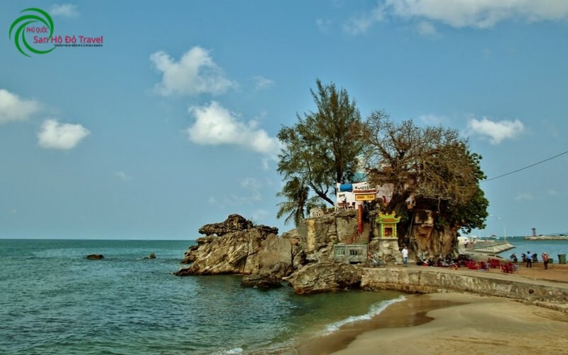
Chợ đêm: Đây là một điểm nhấn của Phú Quốc. Nơi bạn có thể tha hồ thưởng thức ẩm thực biển Phú Quốc, những món ăn mang đậm chất Phú Quốc, và đây chính là nơi bạn có thể mua rất nhiều món đồ lưu niệm đẹp, thú vị và lạ.
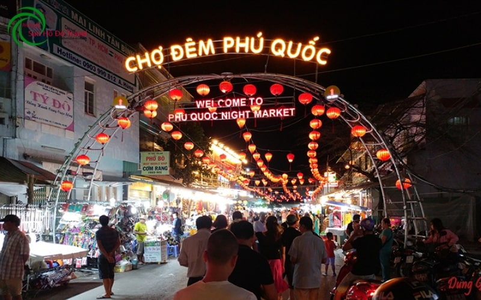
Chợ Dương Đông :Đây là ngôi chợ đông đúc nhất ở Phú Quốc với đủ các loại hải sản rất tươi, ngon. Địa chỉ chợ Dương Đông Phú Quốc nằm bên bờ sông Dương Đông, ngay trung tâm Dương Đông.
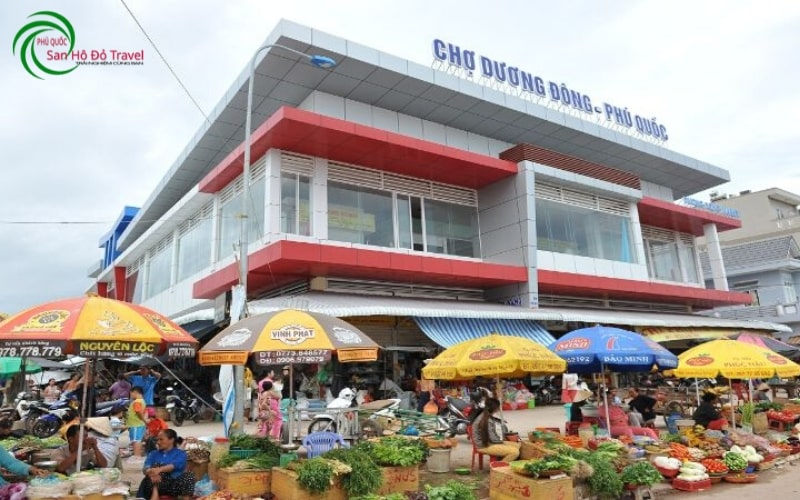
Khu vực Đông Đảo:
Làng Chài Hàm Ninh: Đây là một trong những làng chài đẹp và đáng đến nhất ở Phú Quốc.Từ trung tâm thị trấn Dương Đông, ngược lên hướng đông bắc chưa đầy 20 km, bạn sẽ đến với xã Hàm Ninh. Nơi đây nổi tiếng với làng chài Hàm Ninh - ngôi làng cổ nằm nép mình dưới chân dãy núi Hàm Ninh cao hàng trăm mét.
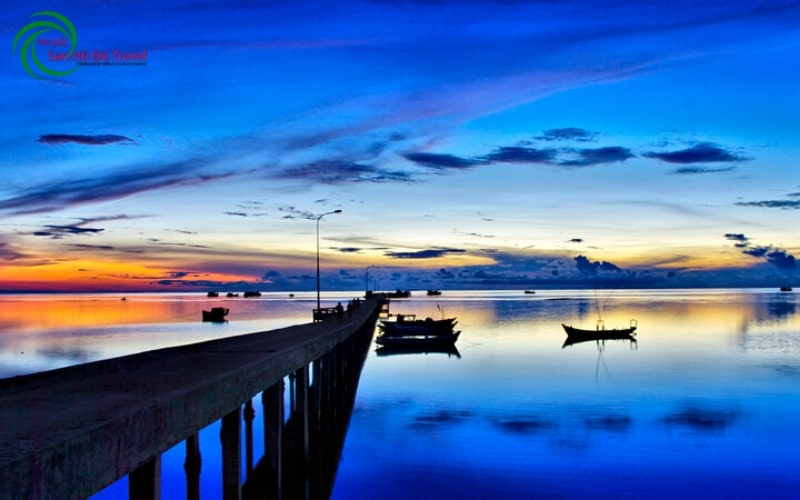
Khu Du Lịch Suối Tranh: là một địa điểm tham quan nổi tiếng đối với khách du lịch trong và ngoài nước khi đến tham quan tại đảo Phú Quốc.. Suối Tranh chảy qua nhiều địa hình, vị trí hiểm trở tạo nên những con thác, những hồ nước sâu trong vắt.

Khu vực Nam Đảo:
Bãi Sao: Du lịch Phú Quốc vẫn luôn nổi tiếng với những bãi biển xinh đẹp, mê đắm lòng người. Trong đó, nổi bật nhất là Bãi Sao với bờ cát trắng trải dài, những hàng dừa xanh cao vút bên bờ biển cong hình lưỡi liềm. Nơi đây được ví như chốn thiên đường có thật ở Phú Quốc.
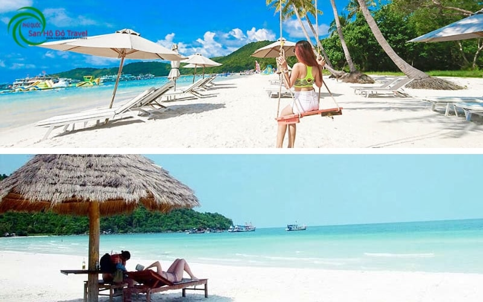
Nhà tù Phú Quốc: Nhà tù Phú Quốc trên đảo cực Tây Nam Tổ quốc. Đây là nhà tù do Mỹ xây dựng với gần 500 nhà giam, giam giữ 40.000 tù nhân tính cả tù chính trị nhiều thời kỳ.
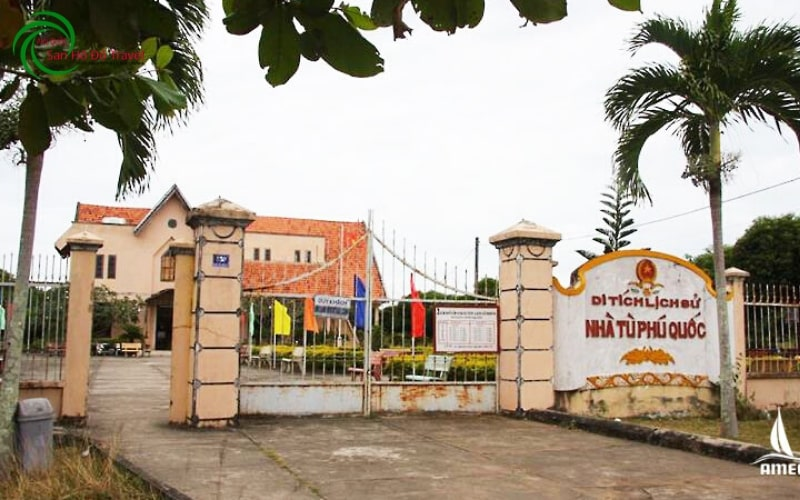
Các hòn đảo tuyệt đẹp: Các bạn đã từng nghe tới Hòn Móng Tay, hòn Mây Rút, hòn Dăm Ngang (hay Gầm Ghì) Chúng là những hòn đảo tuyệt đẹp ở khu cảng An Thới.
Ngoài nét đẹp hoang sơ, nước trong vắt thì ở các hòn đảo này, đặc biệt là ở hòn Dăm Ngang và Mây Rút có một quần thể san hô cực kì đẹp. Nên khi đi ra đây, bạn nhớ tham gia hoạt động lặn ngắm san hô nhé.
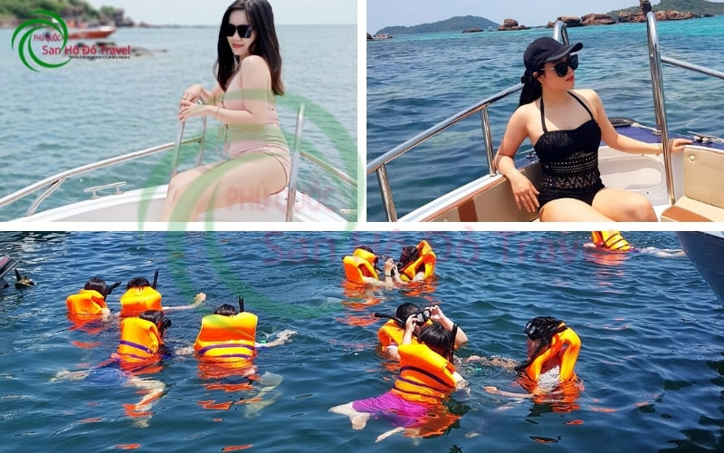
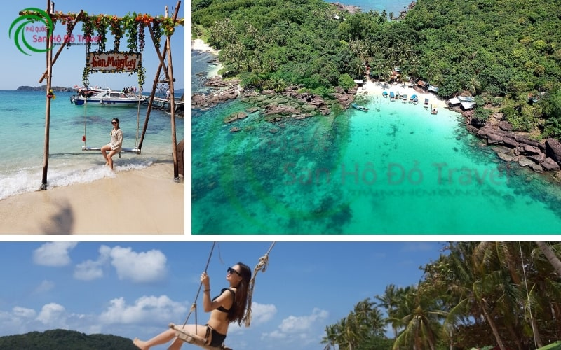
Chùa Hộ Quốc: Chùa Hộ Quốc hay còn gọi là Thiền viện Trúc Lâm Hộ Quốc, là ngôi chùa lớn và yên tĩnh bậc nhất trên đảo Phú Quốc Với kiến trúc hài hòa với cảnh quan thiên nhiên, chùa Hộ Quốc được xem như nơi hội tụ của “đại danh thắng” trên Đảo Ngọc.
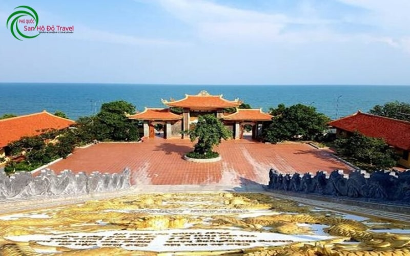
Khu vực Bắc Đảo:
Bãi Dài: Bãi Dài cũng được đánh giá là một bãi biển rất đẹp ở Phú Quốc, đã từng được bình chọn là 1 trong 13 bãi biển hoang sơ đẹp nhất thế giới.
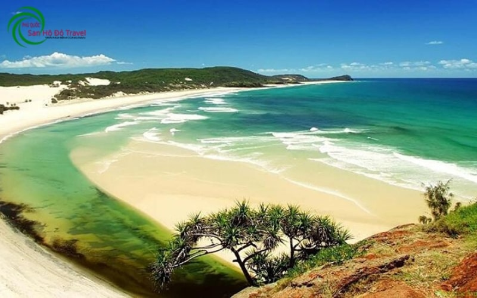
Mũi Gành Dầu: Nằm ở tận cùng phía Bắc, mũi Gành Dầu nằm biệt lập của Phú Quốc. Mang lại cái cảm giác yên bình để khám phá những điều nhẹ nhàng nhất về cuộc sống của người dân hòn đảo ngọc này. Một điểm thú vị là từ đây bạn có thể nhìn thấy nước bạn Campuchia, tất nhiên là chỉ thấy biển và núi thôi.
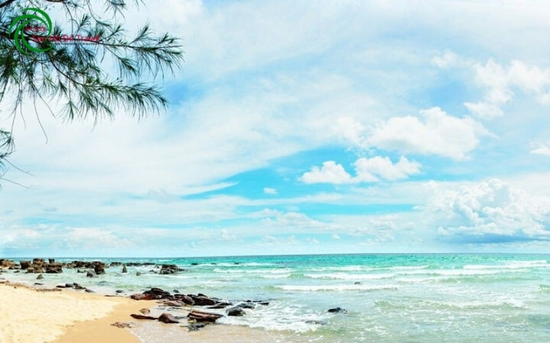
Đền thờ Nguyễn Trung Trực: Tại nơi đây quý khách sẽ được trở về với những giai thoại huyền bí của cụ Nguyễn với những chiến tích hào hùng tại Phú Quốc.
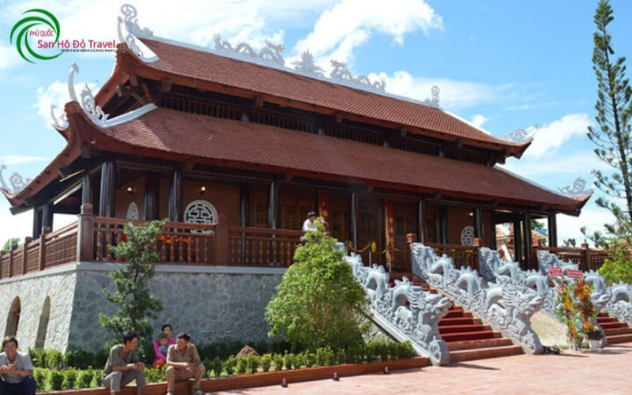
Vườn tiêu: Phú Quốc nổi tiếng với những vườn tiêu lớn và đẹp mắt nên ngoài ghé để mua tiêu, du khách còn đến đây để tham quan, chụp những bức hình đẹp, nghe chủ vựa tiêu kể về quá trình trồng cho đến thu hoạch tiêu, tận mắt ngắm nhìn những chùm tiêu chín mọng đỏ trên cây.
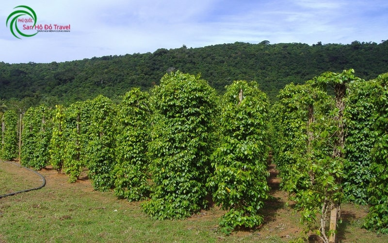
Khu vực Bãi Thơm:
Bãi Thơm: Nằm dưới chân núi ông Diện, cách Dương Đông khoảng 35km, nằm tách biệt so với không gian ồn ào, náo nhiệt của trung tâm Phú Quốc. Đây là bãi cát hẹp, nước biển nông và có nhiều đá ngầm nên chủ yếu chỉ đến để ngắm và tự sướng thôi chứ ít ai đến tắm.
.jpg) Vườn quốc gia Phú Quốc: Đây là một địa điểm rất thú vị dành cho ai thích khám phá, hòa mình với thiên nhiên núi rừng.
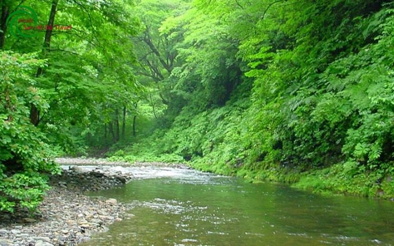
Hòn Một Phú Quốc: Vùng đất cổ tích bị lãng quên ở Phú Quốc, với khung cảnh thanh bình, mát mẻ rất thích hợp cho những ai muốn tìm chốn riêng tư thật sự. Hòn Một gần như tách biệt hẳn với mọi thứ bên ngoài, không ồn ào, bụi bặm, đúng chất hoang đảo.
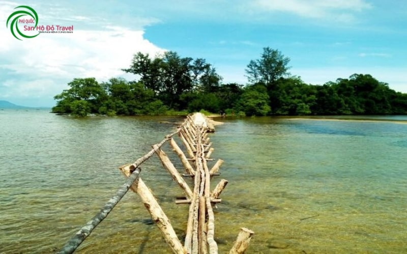
Vườn quốc gia Phú Quốc: Đây là một địa điểm rất thú vị dành cho ai thích khám phá, hòa mình với thiên nhiên núi rừng.
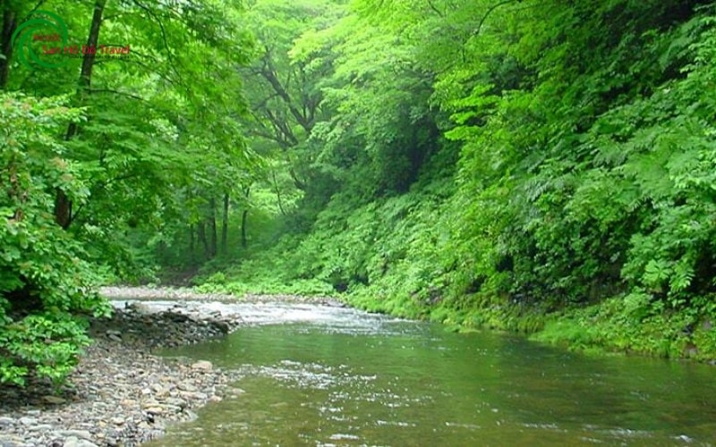
Hòn Một Phú Quốc: Vùng đất cổ tích bị lãng quên ở Phú Quốc, với khung cảnh thanh bình, mát mẻ rất thích hợp cho những ai muốn tìm chốn riêng tư thật sự. Hòn Một gần như tách biệt hẳn với mọi thứ bên ngoài, không ồn ào, bụi bặm, đúng chất hoang đảo.
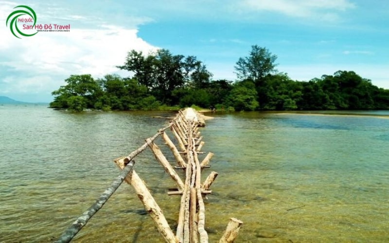
CÁC HOẠT ĐỘNG KHÔNG THỂ BỎ QUA KHI ĐẾN PHÚ QUỐC
Câu mực đêm ngắm hoàng hôn Phú Quốc
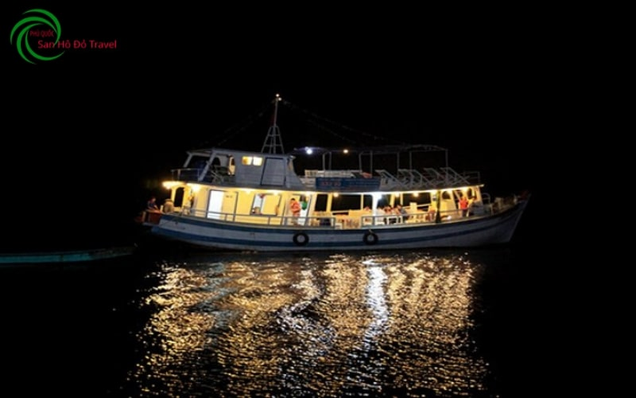
Đến với Phú Quốc nếu chưa trải nghiệm một lần đóng vai ngư dân câu mực đêm là một điều vô cùng thiếu sót. Bạn sẽ được lênh đênh trên biển ngắm hoàng hôn đồng thời được trổ tài câu mực như những ngư dân thực thụ.
Sẽ không còn gì tuyệt vời bằng khi chính tay bạn câu được những chú mực đang săn mồi dưới đáy đại dương hay vô tình câu được những chú cá xanh dương đang nổi mình trên mặt nước phải không nào?
Câu cá lặn ngắm san hô Phú Quốc
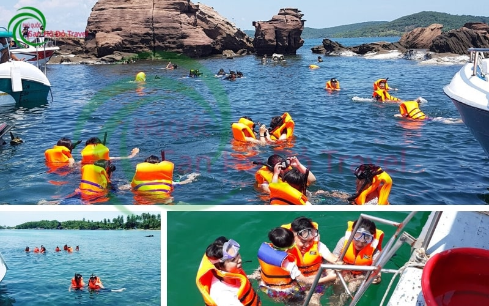
Trong hành trình khám phá Nam Đảo, du khách sẽ được trải nghiệm những khoảnh khắc khó quên trên biển khi đến với những hòn đảo còn nguyên nét hoang sơ trong quần đảo Phú Quốc. Bạn còn được thử vận may trên biển với các ống câu và mồi câu theo cách truyền thống của ngư dân Phú Quốc. Chiến lợi phẩm là cá câu được sẽ được phục vụ ngay trên tàu.
Đây còn là dịp để bạn trải nghiệm cuộc sống đầy lý thú của các ngư phủ nơi hải đảo xa xôi. Đặc biệt hơn cả là những dải san hô nơi đây và bạn sẽ được trang bị kính lặn, áo phao và ống thở để tự do bơi lội và lặn ngắm san hô, khám phá thế giới lung linh sắc màu dưới đáy đại dương.
Tham quan 4 hòn đảo hoang sơ Hòn Móng Tay, Hòn Mây Rút, Hòn Dăm Ngang ( Bằng tàu hoặc Cano )
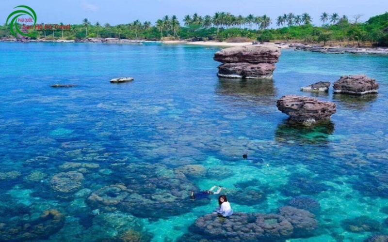
Chúc bạn có một chuyến đi du lịch Phú Quốc thật vui vẻ và ý nghĩa!!!